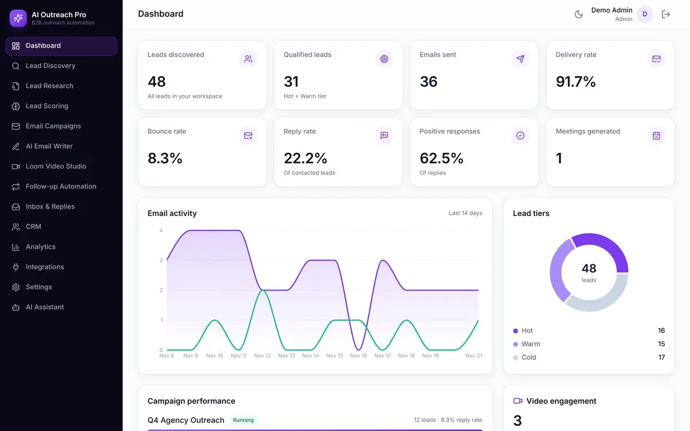
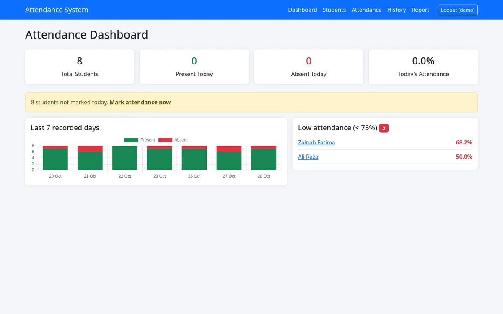
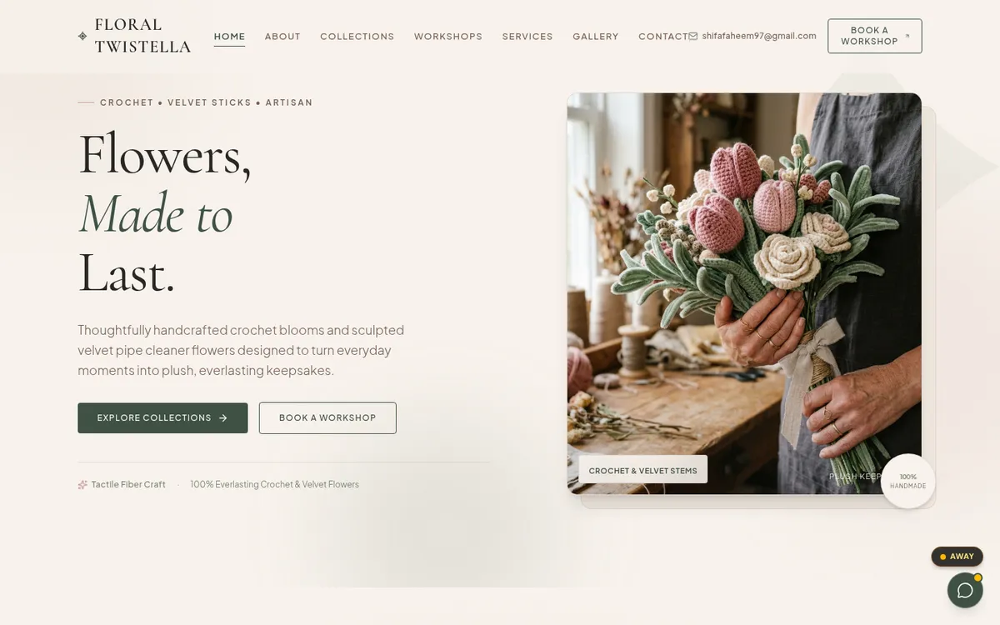
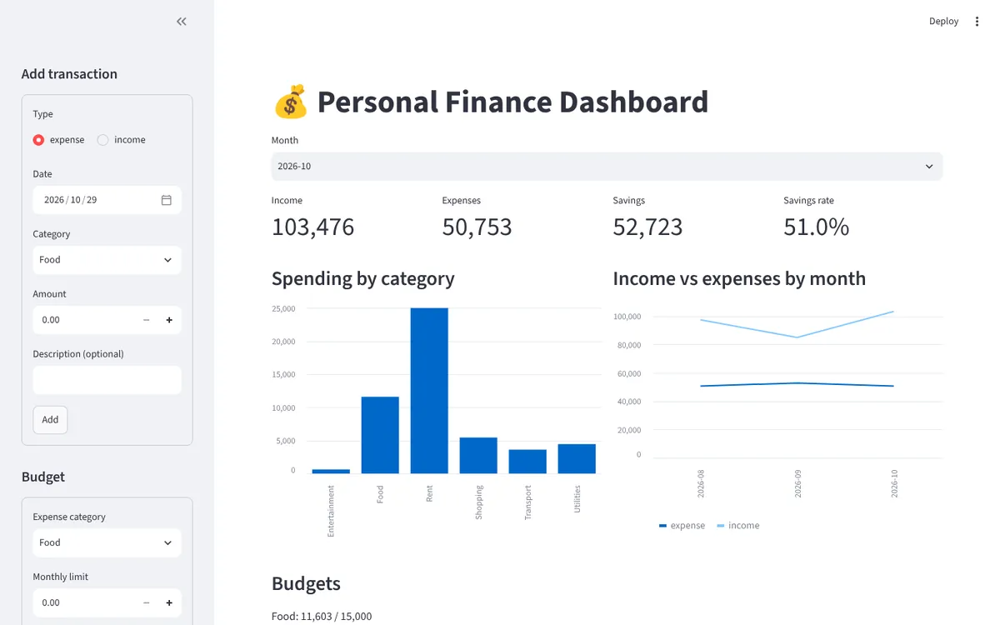
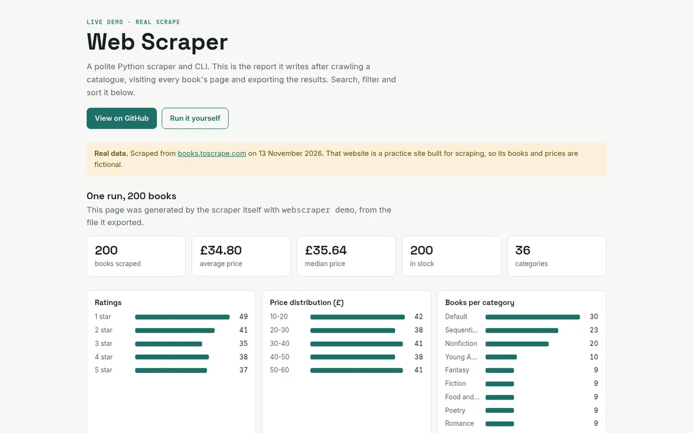
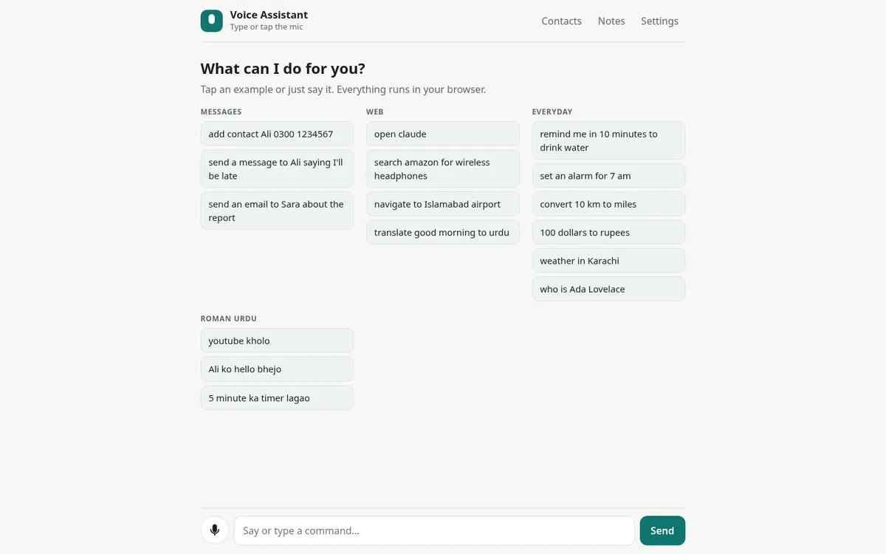

Programming
Core languages for application logic and interfaces.
Open to remote roles & freelance projects
Python Developer · AI & ML Developer · AI Automation
I'm Shifa Faheem, a Python developer in Karachi. I build Django web apps, computer-vision tools and AI-assisted automation — each project tested, documented and live to try.
I like turning messy, repetitive problems into small, reliable tools.
I'm completing a BS in Mathematics (2023–2026) and trained in Python with AI at Infra Professional Training Center (2026). That background shows up in how I work: break the problem down, check the edge cases, and write tests before calling something done.
My projects are personal and self-directed — a Django attendance system, OpenCV face detection, a Streamlit finance dashboard, a polite web scraper and an AI-assisted outreach platform. Most come with a live demo and an automated test suite.
I'm looking for a remote junior role as a Python, Django or AI/ML developer, and for freelance Python and automation projects.
Connect on LinkedInGrouped by what I use them for. Each tool here appears in at least one of my projects or my training.
Core languages for application logic and interfaces.
Web apps, APIs, authentication and databases.
Computer vision in practice; ML and agents as an active learning track.
Collecting, cleaning and presenting data people can act on.
Tests, automation and deployment so projects keep working.
Version control and documented, reviewable work.
Personal projects with public code. Features listed here are taken from each project's own repository.

An AI-assisted B2B outreach platform. It finds and researches leads, scores them, drafts personalised emails and video scripts, and tracks replies — with a manager's approval required before anything is sent.
The live preview runs on sample data with sending switched off. Still being refined and hardened.

A web app for teachers to manage students and track daily attendance, with reports that flag students who are falling behind.
Demo login: demo / Demo@2026 (fictional data).
Detects faces in photos, video files and a live webcam feed, with a privacy mode that blurs every face.

A responsive website for a handmade floral-art studio, presenting product collections, workshops, custom bouquets and gifting.

Track income and expenses, set monthly budgets per category and see where money goes with live charts.

A command-line tool and Python library that crawls a catalogue, visits each detail page and exports clean data — while respecting rate limits and robots.txt.

A Python desktop assistant you can talk or type to, plus a browser version. It opens sites, drafts WhatsApp messages and emails, converts units, sets reminders and understands Roman Urdu.
eval) and a text-only modeA completed conversational AI project. The code, demo and full feature list will be published here soon.
Each item links to a project that shows it — so you can judge the work, not just the claim.
Command-line tools, scripts and libraries with tests — like the duplicate file finder and web scraper.
Login, dashboards, reports and CSV export — like the attendance management system.
Conversational tools that understand commands, including Roman Urdu — like the voice assistant.
Workflows that research, draft and follow up, with a human approval step — like AI Outreach Pro.
Interactive dashboards and data pipelines with pandas and Streamlit.
Image, video and webcam processing with OpenCV — like face detection with privacy blur.
Mathematics for analytical thinking; focused training for applied Python and AI.
Degree programme · Karachi, Pakistan
Infra Professional Training Center
Recruiters, teams and clients are all welcome. I'm in Pakistan time (UTC+5). Write directly or use the form — it opens your email app with the message ready to send.